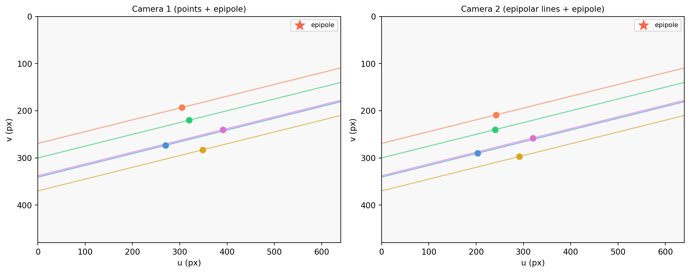

import numpy as np
import matplotlib.pyplot as plt
import matplotlib.patches as mpatches
rng = np.random.default_rng(7)
# ---- camera setup ----
K = np.array([[500., 0., 320.],
[0., 500., 240.],
[0., 0., 1.]]) # shape (3, 3)
# Camera 1 at world origin
R1 = np.eye(3) # shape (3, 3)
t1 = np.zeros(3) # shape (3,)
P1 = K @ np.hstack([R1, t1.reshape(3, 1)]) # shape (3, 4)
# Camera 2 displaced along x, slight y offset
C2 = np.array([0.4, -0.1, 0.0]) # world position of camera 2 center
R2 = np.eye(3) # shape (3, 3)
t2 = -R2 @ C2 # shape (3,)
P2 = K @ np.hstack([R2, t2.reshape(3, 1)]) # shape (3, 4)
W, H = 640., 480.
# ---- helper: project homogeneous point to pixel ----
def project(P, X):
lam_x = P @ np.append(X, 1.) # shape (3,)
return lam_x[:2] / lam_x[2] # shape (2,)
# ---- helper: clip line ax+by+c=0 to image ----
def clip_line(l, W, H):
a, b, c = float(l[0]), float(l[1]), float(l[2])
cands = []
if abs(b) > 1e-10:
for u in [0., W]:
v = -(a * u + c) / b
if 0. <= v <= H:
cands.append([u, v])
if abs(a) > 1e-10:
for v in [0., H]:
u = -(b * v + c) / a
if 0. <= u <= W:
cands.append([u, v])
unique = []
for p in cands:
if not any(np.allclose(p, q) for q in unique):
unique.append(p)
return np.array(unique[:2]) if len(unique) >= 2 else None
# ---- 5 scene points in front of both cameras ----
X_world = np.array([
[-0.3, 0.2, 3.0],
[ 0.0, -0.1, 2.5],
[ 0.2, 0.3, 3.5],
[ 0.4, 0.0, 2.8],
[-0.1, -0.3, 3.2],
]) # shape (5, 3)
# project to both images
x1s = np.array([project(P1, X) for X in X_world]) # shape (5, 2)
x2s = np.array([project(P2, X) for X in X_world]) # shape (5, 2)
# ---- epipoles ----
lam_e1 = P1 @ np.append(C2, 1.) # shape (3,)
e1 = lam_e1[:2] / lam_e1[2] # shape (2,)
lam_e2 = P2 @ np.array([0., 0., 0., 1.]) # shape (3,)
e2 = lam_e2[:2] / lam_e2[2] # shape (2,)
# ---- skew-symmetric matrix ----
def skew(v):
return np.array([[ 0., -v[2], v[1]],
[ v[2], 0., -v[0]],
[-v[1], v[0], 0. ]]) # shape (3, 3)
# baseline translation in camera-1 frame
t_12 = t2 - t1 # shape (3,)
E = skew(t_12) @ R2 # shape (3, 3) (essential matrix, same R since R1=I)
F = np.linalg.inv(K).T @ E @ np.linalg.inv(K) # shape (3, 3)
# ---- draw ----
fig, axes = plt.subplots(1, 2, figsize=(12, 5))
colors = ['#4a90d9', '#2ecc71', 'goldenrod', 'orchid', 'coral']
for ax, cam, x_self, x_other, F_dir, epole, title in [
(axes[0], 'Image 1', x1s, x2s, F.T, e1, 'Camera 1 (points + epipole)'),
(axes[1], 'Image 2', x2s, x1s, F, e2, 'Camera 2 (epipolar lines + epipole)'),
]:
ax.set_xlim(0, W); ax.set_ylim(H, 0)
ax.set_aspect('equal')
ax.set_facecolor('#f8f8f8')
ax.set_title(title, fontsize=10)
ax.set_xlabel('u (px)'); ax.set_ylabel('v (px)')
for i, (xi, xo) in enumerate(zip(x_self, x_other)):
c = colors[i % len(colors)]
ax.scatter(*xi, color=c, s=50, zorder=5)
# draw epipolar line induced by the OTHER image's point
xo_h = np.append(xo, 1.) # shape (3,)
l = F_dir @ xo_h # shape (3,)
seg = clip_line(l, W, H)
if seg is not None:
ax.plot(seg[:, 0], seg[:, 1], color=c, lw=1.2, alpha=0.7)
ax.scatter(*epole, marker='*', s=160, color='tomato', zorder=6, label=f'epipole')
ax.legend(fontsize=8)
plt.tight_layout()
plt.show()
print(f"Epipole e1 (camera 2 center in image 1): ({e1[0]:.1f}, {e1[1]:.1f})")
print(f"Epipole e2 (camera 1 center in image 2): ({e2[0]:.1f}, {e2[1]:.1f})")C:\Users\james.choi\AppData\Local\Temp\ipykernel_11136\2086319340.py:65: RuntimeWarning: divide by zero encountered in divide
e1 = lam_e1[:2] / lam_e1[2] # shape (2,)
C:\Users\james.choi\AppData\Local\Temp\ipykernel_11136\2086319340.py:68: RuntimeWarning: divide by zero encountered in divide
e2 = lam_e2[:2] / lam_e2[2] # shape (2,)
Epipole e1 (camera 2 center in image 1): (inf, -inf)
Epipole e2 (camera 1 center in image 2): (-inf, inf)